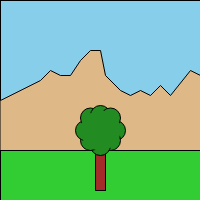
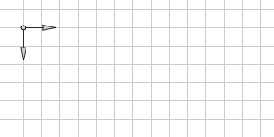
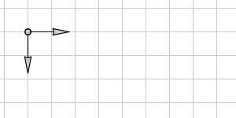

g2 is capable of embedding code into the command queue via the ins() method.
| Method | Comment |
|---|---|
ins(fn) |
Embed functions into g2 queue. |
There are two use cases of ins:
- call a function
- use an object's g2 method
g.ins(()=>{})... the function as argument is invoked immediately at 'define time'. It has no effect at 'run time'.g.ins((g)=>{})... the function as argument is invoked using the current g2 instance as parameter immediately at 'define time', it has no effect at 'run time'. The g2 commands are _inplace appended to the current g2 instance. This effect substitutes the oldcpy, which is now deprecated and removed.g.ins(obj)... if theobjargument has a method called g2, it will be invoked at 'run time'. It will have no effect at 'define time'. This is how custom objects can be used in the command queue.
Note: Avoid invoking arbitrary javascript snippets in ins argument list, as the results may have side effects.
ins() has no limits in it's usage. You can modify your code relevant for the next rendering process via the exe() command.
Manipulate objects
const ctx = document.getElementById("c").getContext("2d"),
node = { fill:'lime', g2() {
return g2().cir({x:160,y:50,r:15,fs:this.fill,lw:4,sh:[8,8,8,"gray"]})}
};
let color = 'red';
g2().cir({x:40,y:50,r:15,fs:color,lw:4,sh:[8,8,8,"gray"]})
.ins(()=>{color='green'})
.cir({x:80,y:50,r:15,fs:color,lw:4,sh:[8,8,8,"gray"]})
.ins((g)=>g.cir({x:120,y:50,r:15,fs:'orange',lw:4,sh:[8,8,8,"gray"]}))
.ins(node)
.exe(ctx)
View transformation
Via ins() modifying the current view state becomes much more elegant.
Take a look at the example in View for a direct comparison.
worldview = {x:0,y:0,scl:1},
treeview = {x:0,y:0,scl:1};
world = g2().view(worldview)
.rec({x:0,y:0,b:200,h:200,fs:"skyblue"})
.ply({pts:[0,100,40,...],fs:"burlywood"})
.rec({x:0,y:0,b:200,y:150,fs:"limegreen"})
tree = g2().view(treeview)
.rec({x:-5,y:0,b:10,h:40,fs:"brown"})
.beg({fs:"forestgreen"})
.cir({x:15,y:-20,r:10})
...
.cir({x:0,y:-20,r:20,ls:"transparent"})
.end()
g2().use({grp:world,x:0,y:0})
.use({grp:tree,x:100,y:150})
.exe(ctx1)
.ins(()=>{treeview.scl = 1.5, treeview.x = 50, treeview.y = 25})
.exe(ctx2)
.ins(()=>{worldview.scl = 1.5, worldview.y = -50})
.exe(ctx3)
  
Conditional Rendering
ins is capable of invoking javascript. This characteristic can be easily used to manipulate the command queue to fit certain conditions. Read more about animations here
<canvas id="c" width="550" height="100" position="absolute"></canvas>
<script src='g2.core.js'></script>
<script>
const ctx=document.getElementById("c").getContext("2d"),
g=g2();
let r=40,pi=Math.PI,dphi=1/20*pi,dalpha=1/100,style={fs:"transparent",lw:8},
phi=0, alpha=0.3;
wheel = g2().cir({x:0,y:0,r:r,...style})
.lin({x1:-0.8*r,y1:0,x2:0.8*r,y2:0,...style})
.cir({x:0,y:0,r:4,fs:"snow",lw:2});
function rollingWheel(g) {
let r=40,dphi=11/20*Math.PI,style={fs:"transparent",lw:8},
wheel = g2().cir({x:0,y:0,r:r,...style})
.lin({x1:-0.8*r,y1:0,x2:0.8*r,y2:0,...style})
.cir({x:0,y:0,r:4,fs:"snow",lw:2});
for (let alpha=0.3,phi2=0; alpha<=1&&phi>phi2;alpha+=0.1,phi2+=dphi)
g.use({grp:wheel,x:r*phi2,y:54,w:phi2,ls:'rgba(0,0,0,'+alpha*alpha*alpha+')'});
return g;
}
function render() {
alpha+=dalpha;
phi+=dphi;
g.del()
.clr()
.grid()
.use({grp:wheel,x:r*phi,y:54,w:phi,ls:'rgba(0,0,0,'+alpha*alpha*alpha+')'})
.ins(()=>{if(r*phi>154*pi||r*phi<=0){dphi=-dphi,dalpha=-dalpha}})
.ins(rollingWheel(g))
.exe(ctx);
requestAnimationFrame(render)
}
render();
</script>